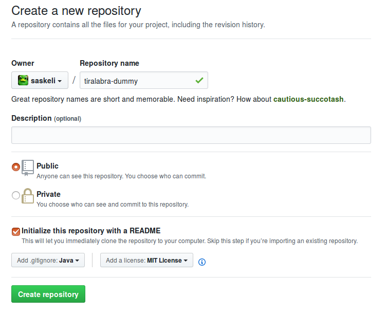
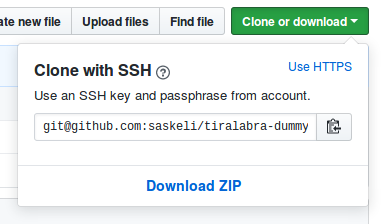
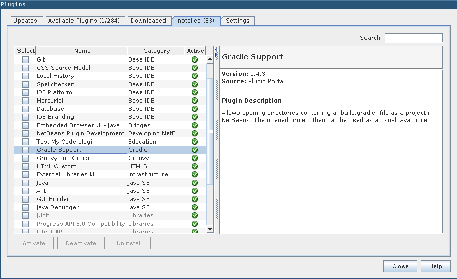
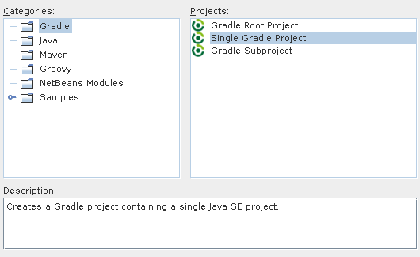
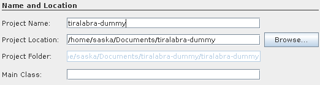
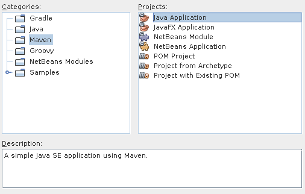
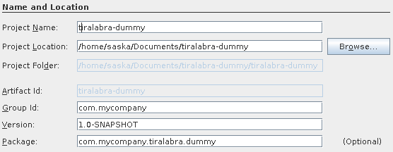
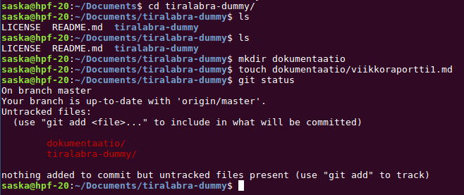

Below minimum effort was to create maven and gradle projects for java are presented. If you already know what you are doing and have your own preferred approach to project creation, you are free to disregard this document.
Maven and Gradle are Build automation tools for java. For example, both of these make creating test coverage reports or executable jar files fairly easy.
1. Create a project repository
When using netbeans it’s often convenient to first create the project repository since IDEs are typically able to automatically update .gitignore files as the program progresses.

You’ll probably want to check the “Initialize repository with README.md” box so the project can be instantly cloned after creation.
2. Clone the repository
Copy the link to the repository

Run git clone <linkki repoon>
[GRADLE only] 3a. Create a gradle project using netbeans
Check Tools -> Plugins to make sure that gradle support is installed in neabeans.

If gradle support has not been installed you can find it from the “available plugins” tab.
Go to create a new project with netbeans but select Gradle -> Sinlge Gradle Project from the settings.

Create the project in the repository you cloned.

Add at least the following lines to the build.gradle file. You may want to update the file later as well but that is beyond the scope of this tutorial. (Add the lines to the right place in the file. The lines already in the file should point to the right locations)
apply plugin: 'jacoco'
jacocoTestReport {
reports {
xml.enabled = true
html.enabled = true
}
}
check.dependsOn jacocoTestReport
[MAVEN only] 3b Create a Maven project using netbeans
The project is created using the New Project wizard, but instead of selecting the Java category, select Maven. Now select Java Application from the list on the right.

On the page Name and Location, you should give you program a good and descriptive name. Set Project Location to your cloned git repository. You should also change Group id to your project name or at least something other than com.mycompany.enterprising.domain. Note that this should not contain any caps. This is important if you are going to do mutation texting.

The Maven project is very similar to a “normal” Java-project. The big difference is the pom.xml file that contains all the project dependacies in xml format. Add some libraries to ease testing the project.
before adding stuff your pom.xml should look a bit like this:
<?xml version="1.0" encoding="UTF-8"?>
<project xmlns="http://maven.apache.org/POM/4.0.0" xmlns:xsi="http://www.w3.org/2001/XMLSchema-instance"
xsi:schemaLocation="http://maven.apache.org/POM/4.0.0 http://maven.apache.org/xsd/maven-4.0.0.xsd">
<modelVersion>4.0.0</modelVersion>
<groupId>superohjelma</groupId>
<artifactId>SuperOhjelma</artifactId>
<version>0.1.0</version>
<packaging>jar</packaging>
<properties>
<project.build.sourceEncoding>UTF-8</project.build.sourceEncoding>
<maven.compiler.source>1.8</maven.compiler.source>
<maven.compiler.target>1.8</maven.compiler.target>
</properties>
<!-- Stuff should be added here-->
</project>
The start of this xml is project specific and we will leave it alone. Instead we add some dependancies and plugins. Add the the following between the </properties> and </project> tags:
<dependencies>
<dependency>
<groupId>junit</groupId>
<artifactId>junit</artifactId>
<version>4.12</version>
<scope>test</scope>
</dependency>
</dependencies>
<build>
<plugins>
<plugin>
<artifactId>maven-compiler-plugin</artifactId>
<configuration>
<source>1.8</source>
<target>1.8</target>
</configuration>
<version>3.3</version>
</plugin>
<plugin>
<groupId>org.pitest</groupId>
<artifactId>pitest-maven</artifactId>
<version>1.1.8</version>
</plugin>
</plugins>
</build>
After adding the lines above your pom.xml shoult look something like this:
<?xml version="1.0" encoding="UTF-8"?>
<project xmlns="http://maven.apache.org/POM/4.0.0" xmlns:xsi="http://www.w3.org/2001/XMLSchema-instance"
xsi:schemaLocation="http://maven.apache.org/POM/4.0.0 http://maven.apache.org/xsd/maven-4.0.0.xsd">
<modelVersion>4.0.0</modelVersion>
<groupId>superohjelma</groupId>
<artifactId>SuperOhjelma</artifactId>
<version>1.0-SNAPSHOT</version>
<packaging>jar</packaging>
<properties>
<project.build.sourceEncoding>UTF-8</project.build.sourceEncoding>
<maven.compiler.source>1.8</maven.compiler.source>
<maven.compiler.target>1.8</maven.compiler.target>
</properties>
<dependencies>
<dependency>
<groupId>junit</groupId>
<artifactId>junit</artifactId>
<version>4.12</version>
<scope>test</scope>
</dependency>
</dependencies>
<build>
<plugins>
<plugin>
<artifactId>maven-compiler-plugin</artifactId>
<configuration>
<source>1.8</source>
<target>1.8</target>
</configuration>
<version>3.3</version>
</plugin>
<plugin>
<groupId>org.pitest</groupId>
<artifactId>pitest-maven</artifactId>
<version>1.1.8</version>
</plugin>
</plugins>
</build>
</project>
After this mutation testing reports with test coverage can be created. Creating these reports can be made easier by doing the following:
Add a new file to your project using te New File… button. Select XML -> XML Document and name the new file nbactions. From the next window, select Well-formed Document and press Finish. Your project should now containe the nbactions.xml file. Move it to the Files folder it it’s not already there.
Open the file and replace the contents with:
<?xml version="1.0" encoding="UTF-8"?>
<actions>
<action>
<actionName>CUSTOM-pit</actionName>
<displayName>pit</displayName>
<goals>
<goal>org.pitest:pitest-maven:mutationCoverage</goal>
</goals>
</action>
</actions>
Now your project has a custom context menu where mutation and test coverage reports can be created.
4. Create the documentation folder and push to git
You shuould add a new folder for documentation, to keep the project neat. To an empty folder you will need to add at least one file so that git adds te folder to version control. You can for example create the first weekly report. After this you are ready to push your changes to git.
